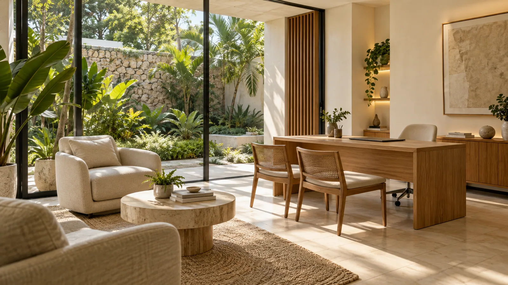
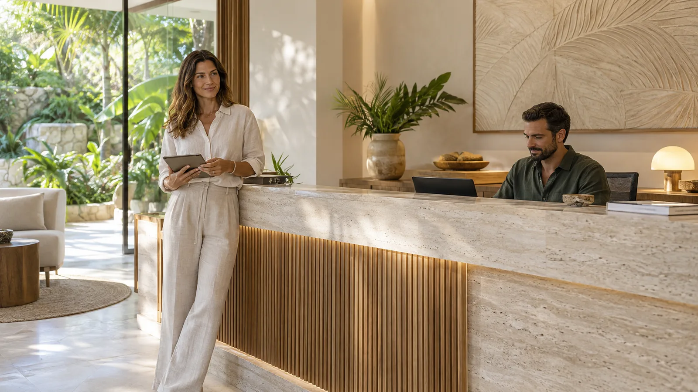
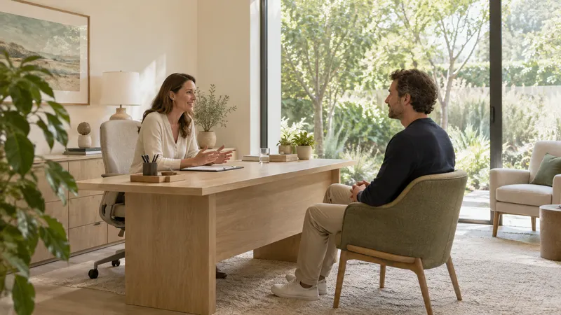

Para empezarRecomendada
Primera visita de valoración
Conversamos sobre lo que te trae, revisamos tu historia y acordamos contigo un plan posible. Sales con un siguiente paso claro.
Fisioterapia, psicología, nutrición y masaje terapéutico en una casa con jardín. Citas puntuales, sesiones sin prisa y un equipo que recuerda tu historia.

Duración y valor claros desde el principio. Si no sabes por dónde empezar, la primera visita de valoración sirve para orientarte.
Conversamos sobre lo que te trae, revisamos tu historia y acordamos contigo un plan posible. Sales con un siguiente paso claro.
Dolor de espalda, cuello o rodilla, postura y recuperación después de una lesión, con ejercicios que puedes seguir en casa.
Un espacio confidencial para hablar de estrés, ansiedad, duelos o momentos de cambio, a tu ritmo y sin juicios.
Hábitos de alimentación posibles para tu rutina real. Sin dietas extremas ni listas de prohibiciones.
Para soltar la tensión acumulada en espalda y hombros. Sala tibia, luz baja y una hora completa para ti.
Revisamos cómo te has sentido desde la última visita y ajustamos el plan. Solo para quienes ya vinieron antes.
Precios ilustrativos en pesos colombianos para este proyecto conceptual.
Cada especialista tiene sus propios días de atención. Elige con quién quieres hablar o deja que te asignemos el primer espacio libre.
Fisioterapia
Dolor de espalda, postura y recuperación después de una lesión.
Lun a vie · mañanas
Fisioterapia
Movilidad, ejercicio guiado y regreso al deporte sin apuros.
Lun a jue · tardes y sábados
Psicología
Estrés, ansiedad y momentos de cambio, con conversaciones sin prisa.
Lun, mar, jue y vie
Nutrición
Hábitos posibles para la vida real, sin dietas extremas.
Mar a jue · sábado en la mañana
Masaje terapéutico
Tensión muscular, descanso profundo y pausas que sí se sienten.
Mié a sáb
Sara y Tomás
Te reciben, organizan tu agenda y te escriben el día antes para confirmar. Si algo cambia, mueven tu cita contigo.
Así funciona la agendaSin formularios eternos ni salas frías. Esto es lo que pasa desde que eliges tu horario hasta que sales con un plan.
Eliges el servicio, la persona y el horario que te sirve. Recibes la confirmación al instante por WhatsApp.
24 horas antes te escribimos. Confirmas con un toque o cambias la hora sin tener que llamar.
Un té en la sala del jardín y una conversación de 45 minutos para entender qué necesitas.
Acordamos los siguientes pasos y te sugerimos la próxima cita. Al día siguiente te escribimos para saber cómo sigues.
Luz natural, madera, plantas y consultorios con puerta cerrada. Pensado para que bajes el ritmo desde que entras.


Elige el servicio, el día y la hora. Verás el resumen antes de confirmar.
Agenda demostrativa · No crea citas realesPuedes cambiar o cancelar sin costo hasta 24 horas antes.
En una agenda real, te llegaría la confirmación por WhatsApp y un recordatorio 24 horas antes. Ver cómo funciona ↗
Sin letra pequeña. Si tienes dudas sobre tu caso, la recepción te orienta antes de reservar.
Pagas el valor de cada sesión el día de tu visita. También ofrecemos planes de varias sesiones para fisioterapia y masaje.
Te entregamos factura electrónica con los datos que tu aseguradora suele pedir. Si tu plan cubre reembolsos, puedes tramitarlo con ella directamente.
Tarjeta débito o crédito, transferencia bancaria y billeteras digitales. Efectivo en recepción.
Sin costo hasta 24 horas antes. Así podemos ofrecer tu espacio a alguien de la lista de espera.
¿No encuentras tu respuesta? Escríbele a la recepción; responde de lunes a sábado.
No. Puedes reservar directamente. Si tienes exámenes o una orden reciente, tráelos a tu primera visita: nos ayudan a entender tu contexto.
45 minutos. Es una conversación para conocerte, revisar lo que te trae y acordar contigo cómo seguir.
Sí, sin costo hasta 24 horas antes. El día anterior te llega un recordatorio con botones para confirmar o cancelar.
La atención es particular. Te entregamos factura electrónica para que solicites el reembolso si tu plan lo permite; consulta las condiciones con tu aseguradora.
Sí. Al reservar eliges a la persona del equipo. Si prefieres el primer horario libre, también puedes dejarlo abierto.
Te anotamos en la lista de espera. Si alguien cancela, te ofrecemos ese espacio por WhatsApp antes que a nadie más.
| Lunes a viernes | 7:00 – 19:00 |
|---|---|
| Sábado | 8:00 – 13:00 |
| Domingo y festivos | Cerrado |
A dos cuadras de la ciclorruta de la Séptima. Hay parqueadero público en la esquina.
Mira cómo una reserva se confirma, se recuerda 24 horas antes y, si se cancela, se ofrece sola a otra persona de la lista de espera.